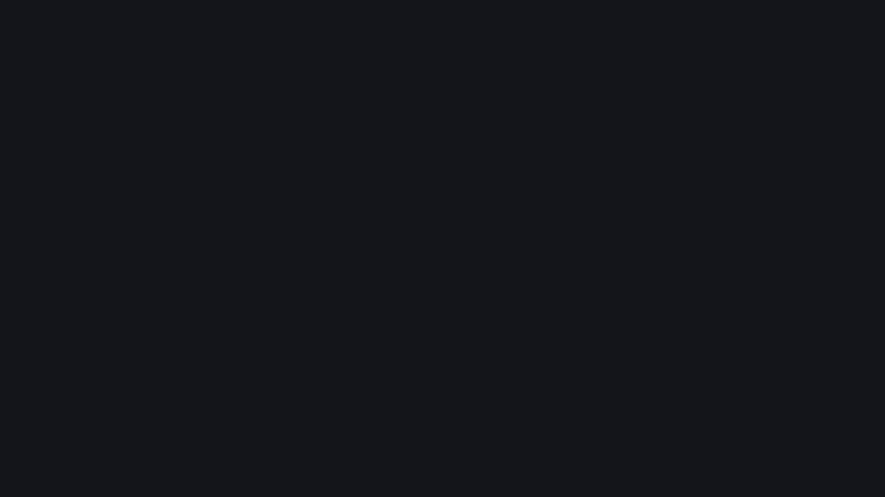
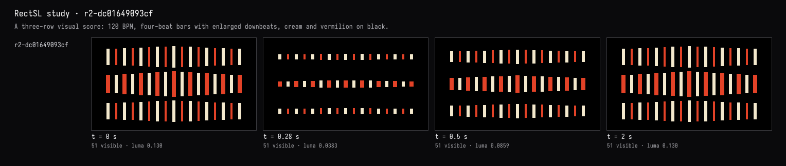
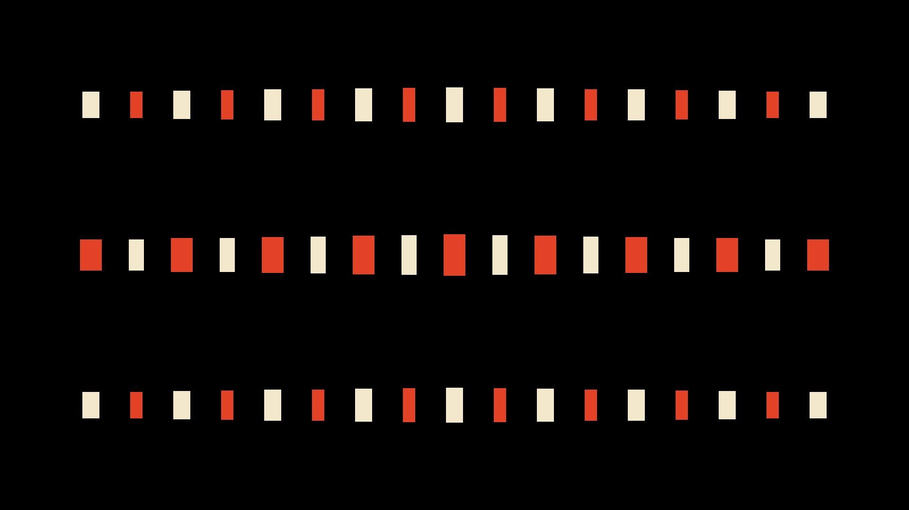

A score at 120 bpm
The recorded exchange: the request, the tool activity, every image the tools returned to the model, and its reply. Expand tool activity to read the steps; open an image to see it full size.
A visual score in the spirit of Oskar Fischinger: rows of vertical rectangles that pulse on a steady beat at 120 beats a minute, four beats to a bar, with the first beat of each bar stronger. A black ground, cream and vermilion.
Tool activity · 11 steps
Starting AI conversation
RectSLStudyGuide finished (5 ms)
InspectRectSLStudy finished (2 ms)
CaptureRenderWindowRequest finished (191 ms)
RectSLStudyGuide finished (1 ms)
Waiting for model
Designing bar layout
Designing bar layout
I’m thinking about how to design three rows of 17 bars using two arrays. The top row would have 9 cream bars at fc6.4, while the middle row would feature 8 red bars at fc5.6, creating a spacing of .8. I want the top and bottom rows to be cream-dominant, with the middle swapped. Also, there’s a shared track for the value envelope, which I’ll need to manage for each available copy.
Next tool:
RectSLStudyGuideRectSLStudyGuide finished (1 ms)
EditRectSLStudy finished (793 ms)
CaptureRenderWindowRequest finished (281 ms)
Completed



Implemented and verified: three balanced rows of vertical cream and vermilion rectangles on pure black, with a heavier central row.
- 120 BPM: a pulse every 0.5 seconds.
- 4/4: the first beat reaches 50% taller than the other three.
- Six-second seamless loop: three complete bars.
The live capture matches the requested palette and arrangement; sampled frames confirm the contraction, regular pulse, and stronger downbeat. Compilation and visual checks passed.